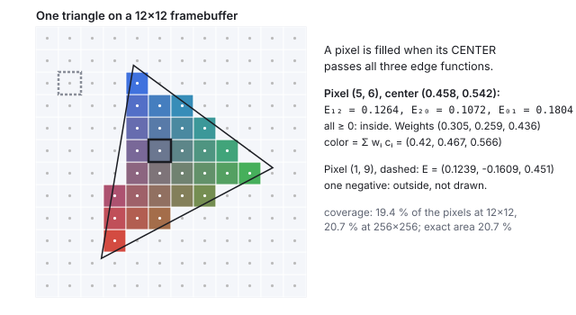
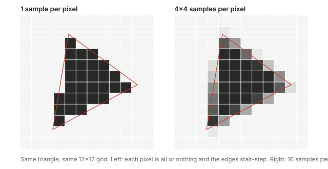
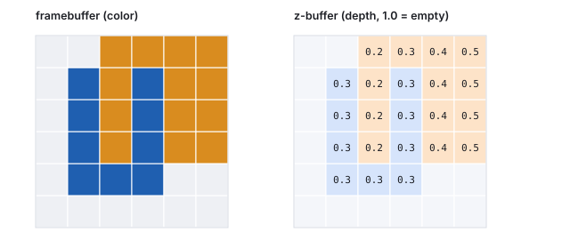
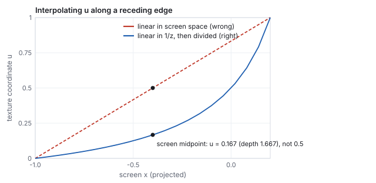
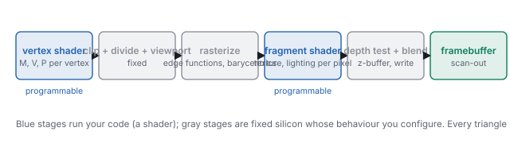
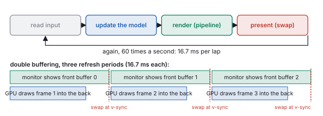

This chapter links to the course’s interactive demos and uses MathJax for its
formulas. Read it through the course website (or download the file and open it in a
browser); a Canvas inline preview will reach neither the demos nor the math.
All chapters.
Rasterization and the GPU Pipeline
CSS 551 · Advanced 3D Computer Graphics · course text
Course text · how a projected triangle becomes pixels, how the pixels of many triangles are sorted, and the loop and the hardware around it. Assigned by your offering’s course site; pairs with the history lecture’s raster era and with every lecture that renders.
After projection a triangle is three points on the image plane, and a screen is a grid of pixels. Rasterization bridges the two: for every pixel, test its center against the triangle’s three edges, and if it is inside, blend the corner attributes to shade it. Three edge functions do the test and, normalized, are the blending weights. This chapter works one pixel by hand, shows why edges stair-step and how supersampling softens them, shows the depth buffer deciding which of two overlapping triangles wins at each pixel, explains why attributes must be interpolated in \(1/w\) rather than on the screen, and closes with the fixed and programmable stages of a GPU and the frame loop that runs them sixty times a second.
Definition (edge function)
For an edge from \(\mathbf{a}\) to \(\mathbf{b}\) and a point \(\mathbf{p}\), all in the image plane,
\[
E_{ab}(\mathbf{p}) = (b_x - a_x)(p_y - a_y) - (b_y - a_y)(p_x - a_x),
\]
the \(z\) component of \((\mathbf{b} - \mathbf{a})\times(\mathbf{p} - \mathbf{a})\): twice the signed
area of the triangle \(\mathbf{a}, \mathbf{b}, \mathbf{p}\), positive when \(\mathbf{p}\) is to the left of
the directed edge. For a counter-clockwise triangle \(\mathbf{v}_0\mathbf{v}_1\mathbf{v}_2\), a point is
inside exactly when all three of \(E_{12}, E_{20}, E_{01}\) are non-negative.
This is the which-side test of the vectors chapter, in two
dimensions, three times. It is also linear in \(\mathbf{p}\), so stepping one pixel to the
right adds a constant to each edge function: a rasterizer evaluates three additions per
pixel, which is why the operation could be frozen into silicon.

The raster demo’s triangle on a \(12\times12\) framebuffer. Small dots are the pixel centers, the only points ever tested. The outlined pixel is worked below; the dashed one fails one edge and is not drawn.
Worked example (one pixel)
The triangle’s corners (in \([0,1]^2\), \(y\) up) are
\(\mathbf{v}_0 = (0.242, 0.143)\), \(\mathbf{v}_1 = (0.877, 0.479)\), \(\mathbf{v}_2 = (0.361, 0.858)\),
counter-clockwise, with \(E_{01}(\mathbf{v}_2) = 0.414\), twice its area. Pixel \((5, 6)\) of a
\(12\times12\) grid has center \(((5 + \tfrac12)/12, (6 + \tfrac12)/12) = (0.458, 0.542)\).
All three positive: the pixel is inside and is drawn. Pixel \((1, 9)\) has
\(E = (0.124, -0.161, 0.451)\); one negative, outside, skipped. Every one of the 144
pixels is decided the same way, and 28 of them (19.4 %) pass.
2 · Barycentric coordinates: what color is it?
The three edge functions are not just a test. Divided by twice the triangle’s area
they are the point’s barycentric coordinates, the weights that
express \(\mathbf{p}\) as a blend of the corners:
\(w_0\) is the fraction of the area in the sub-triangle opposite \(\mathbf{v}_0\), and so on. Each weight is 1 at its own vertex, 0 on the opposite edge, and linear in between.
Worked example (the pixel’s color)
For pixel \((5, 6)\): \(w = (0.1264, 0.1072, 0.1804)/0.414 = (0.305, 0.259, 0.436)\), summing to
\(1.000\). With corner colors red \((0.92, 0.25, 0.20)\), green \((0.20, 0.75, 0.35)\) and
blue \((0.20, 0.45, 0.95)\):
\[
\text{color} = 0.305\,(0.92, 0.25, 0.20) + 0.259\,(0.20, 0.75, 0.35) + 0.436\,(0.20, 0.45, 0.95) = (0.420, 0.467, 0.566),
\]
a grayish blue, nearest the blue corner because \(w_2\) is largest. Any per-vertex
attribute is interpolated the same way: colors, normals, texture coordinates, depth.
That is Gouraud shading in one line, and the reason a vertex shader only has to produce
values at three corners.
See it liveOne triangle becomes pixels:
the same triangle on a framebuffer of 4 to 64 pixels a side, with the sampled centers
and the true edges drawn; rotate it and watch the stair-steps crawl.
3 · Aliasing and supersampling
A pixel is filled or not; nothing in between. So a straight edge that crosses pixels at
an angle becomes a staircase, and a moving edge’s staircase crawls. This is the
aliasing of the image-space chapter: the
grid samples the true shape at one point per pixel and cannot represent the edge’s
exact position. The coverage the grid reports is wrong in the same way: at \(12\times12\)
the triangle covers 19.4 % of the pixels against a true area of 20.7 %, and only at
\(256\times256\) does the count converge.

Left: one sample per pixel, all or nothing. Right: \(4\times4\) samples per pixel; each pixel takes the fraction of its samples that fall inside, and the staircase becomes a ramp. Coverage at \(12\times12\) with 16 samples: 20.7 %, the true area.
Definition (supersampling)
Test \(k\times k\) sample points per pixel instead of one, shade each, and average. The
pixel’s value approximates the fraction of it the triangle covers, blended with
whatever is behind. This is filtering before sampling, the cure the sampling theorem
prescribes; multisampling (MSAA) is the hardware form that shares one shading result
across the samples of a pixel and only resolves coverage per sample.
4 · The depth buffer
Nearer surfaces must hide farther ones. Sorting triangles does not work in general
(they can interpenetrate or form a cycle), so the decision is made per pixel: beside
the color the framebuffer keeps, a second buffer keeps the depth of the
nearest thing drawn so far at each pixel.
Definition (the z-buffer test)
Initialize every depth to “infinitely far” (1 in NDC). For each rasterized
fragment, interpolate its depth from the triangle’s corners; if it is less than the
stored depth, write its color and its depth, else discard it. Order of drawing does not
matter for opaque surfaces; the nearest fragment wins at every pixel.

Triangle A (blue) drawn first at constant depth 0.3 over \(x = 1..3\), \(y = 1..4\); triangle B (orange) drawn second over \(x = 2..5\), \(y = 2..5\) with depth \(0.2 + 0.1\,(x - 2)\), nearer on its left and farther on its right. The depth buffer shows what decided each pixel.
Worked example (two triangles, one column at a time)
Where the two overlap (\(x = 2..3\), \(y = 2..4\)): at \(x = 2\) B’s depth is 0.2, less
than the stored 0.3, so B overwrites A in three pixels. At \(x = 3\) B’s depth is 0.3,
not less than the stored 0.3, so B is discarded in three pixels and A shows.
Beyond \(x = 3\) there is no contest and B writes its depths 0.4 and 0.5. Of B’s 16
fragments, 13 are drawn and 3 rejected. Had B been drawn first, the picture would be
identical: the test is symmetric in drawing order, which is the whole point.
Two consequences. Equal depths go to whichever came first, so two coplanar surfaces
flicker (“z-fighting”); the fix is to offset one or to keep the near plane far
enough out that depth precision is not wasted, as the viewing chapter
showed. And the test only makes sense for opaque fragments; transparent ones must be
blended in back-to-front order after the opaque pass, because a discarded fragment
cannot contribute a tint.
5 · Perspective-correct interpolation
Barycentric weights computed on the screen interpolate linearly in screen space.
But a triangle’s attributes vary linearly in world space, and perspective is
not linear: the divide by depth compresses the far half of a receding edge into a
small part of the screen. Interpolating a texture coordinate with screen-space weights
therefore pulls the far texture toward the near end, the classic warped floor of early
3D games.
The rule
Quantities that are linear on the screen are \(1/w\) and \(a/w\) for any world-linear
attribute \(a\). So interpolate \(a/w\) and \(1/w\) with the screen-space weights, then divide:
\[
a(\mathbf{p}) = \frac{\sum_i w_i\, a_i / w'_i}{\sum_i w_i\, / w'_i} .
\]
The GPU does this for every varying attribute; NDC depth \(z/w\) is the one attribute
that is already screen-linear, which is why the depth buffer stores it.

An edge from \((x, z) = (-1, -1)\) with \(u = 0\) to \((1, -5)\) with \(u = 1\), projected with \(d = 1\): screen \(x\) runs from \(-1\) to \(0.2\). Half of the screen span is far less than half of the edge.
Worked example (the midpoint of the screen span)
At the screen midpoint (\(t = \tfrac12\) in screen space, \(x_{\text{screen}} = -0.4\)):
The screen’s midpoint is only a sixth of the way along the edge in the world, at
depth 1.667, not 3. The far four-fifths of the edge occupy the last fifth of the screen.
6 · The GPU pipeline
By the mid-1980s the steps that turn a scene of triangles into pixels were settled, and
they were cast into hardware as a fixed assembly line; since about 2001 two of the
stations run user code. A GPU is this sequence built as silicon: hardware shaped like
the algorithm.

The stages every triangle passes. Blue stages run a shader you write; gray stages are fixed function whose behaviour you configure (culling, the depth test, blending).
stage
what it does
chapter
vertex shader
per vertex: \(M\), \(V\), \(P\); outputs clip coordinates and the attributes to interpolate
affine, scene graphs, viewing
clip, divide, viewport
cut triangles at the NDC cube, divide by \(w'\), map to pixels
viewing
rasterize
edge functions per pixel, barycentric weights, perspective-correct interpolation
this chapter
fragment shader
per covered pixel: texture lookups, lighting, the color
The economics that shaped it: every stage is embarrassingly parallel (vertices do not
depend on one another, nor do pixels), so the machine is thousands of small cores
running the same program on different data. A vertex shader runs once per vertex; a
fragment shader runs once per covered sample, typically millions of times per frame,
which is why per-pixel work is the cost that matters.
7 · The frame loop, the framebuffer, and the budget
Interactive graphics is a loop: read the input, update the model, run the whole
pipeline, present the result, again. Nothing can be precomputed because the viewer can
act at any moment. The result of each lap lives in the framebuffer, one
color per pixel, which the monitor reads top to bottom sixty times a second.

The loop, and double buffering. Drawing into the buffer being displayed lets the monitor catch a half-finished frame (a tear); drawing into a hidden back buffer and swapping at the refresh does not. A frame that misses the swap waits a whole period.
Worked example (the budget)
At 60 frames per second a lap is \(1000/60 = 16.67\) ms, for everything: input, simulation,
every shader, the swap. A \(1920\times1080\) framebuffer has \(2{,}073{,}600\) pixels; at 60
frames per second that is \(124{,}416{,}000\) pixel updates per second, about 8 ns per pixel
if they were done one at a time. They are not: they are done thousands at a time, which
is the GPU’s reason to exist. Offline rendering has the other budget, hours per
frame; the same triangles, a different economy.
The loop is also the shape of the course’s programs: one model (a handful of
numbers), a controller that writes it (sliders, keys, a mouse), and views that are pure
functions of it (a 3D scene, a matrix panel). No view owns state; the model drives the
matrices, never the reverse. Every demo in this text is built that way, and so is every
studio project.
8 · Exercises
Exercise 1 (edge functions)
For the triangle \((0,0), (4,0), (0,4)\), is the point \((1, 1)\) inside? Is \((3, 2)\)?
Solution
Twice the area \(E_{01}(\mathbf{v}_2) = 4\cdot4 - 0 = 16\) (counter-clockwise). For \((1,1)\): \(E_{01} = 4\cdot1 - 0 = 4\), \(E_{12} = (0-4)(1-0) - (4-0)(1-4) = -4 + 12 = 8\), \(E_{20} = (0-0)(1-4) - (0-4)(1-0) = 4\); all positive, inside, with weights \((0.5, 0.25, 0.25)\). For \((3,2)\): \(E_{12} = (-4)(2) - (4)(3 - 4) = -8 + 4 = -4 < 0\): outside (it is past the hypotenuse, since \(3 + 2 > 4\)).
Exercise 2 (barycentric)
Using the weights of Exercise 1 for \((1,1)\), verify \(\mathbf{p} = \sum w_i \mathbf{v}_i\), and interpolate a depth of 2 at \(\mathbf{v}_0\), 6 at \(\mathbf{v}_1\), 10 at \(\mathbf{v}_2\).
Solution
\(0.5(0,0) + 0.25(4,0) + 0.25(0,4) = (1, 1)\). Depth \(0.5\cdot2 + 0.25\cdot6 + 0.25\cdot10 = 5\).
Exercise 3 (coverage)
The 12-pixel grid reported 19.4 % coverage for a triangle of true area 20.7 %. Explain why the count can be either too low or too high, and why supersampling helps.
Solution
Each pixel is counted whole or not at all by where its single center falls; edge pixels that are mostly covered but whose center is outside are lost, and mostly-empty ones whose center is inside are gained. Which dominates depends on where the edges fall, so the error has either sign. Sixteen samples per pixel count fractional coverage, and the error shrinks with the sample count; here it reaches the true 20.7 % at \(12\times12\).
Exercise 4 (z-buffer)
Redraw Section 4 with B drawn first and A second. Which of A’s fragments are rejected?
Solution
After B, the overlap column \(x = 2\) holds 0.2 and column \(x = 3\) holds 0.3. A’s depth 0.3 is not less than 0.2 at \(x = 2\) (rejected, 3 fragments) and not less than 0.3 at \(x = 3\) (rejected, 3 fragments); at \(x = 1\) and at \(y = 1\) there is no contest and A draws. The final picture is the same as before except at \(x = 3\), where the tie now goes to B: equal depths are decided by drawing order, which is the origin of z-fighting.
Exercise 5 (perspective-correct)
On the edge of Section 5, at what screen position is the true midpoint of the edge (\(u = 0.5\), world depth 3)?
Solution
The edge midpoint in the world is \((x, z) = (0, -3)\), which projects to screen \(x = 0/3 = 0\). Screen \(x\) runs from \(-1\) to \(0.2\), so \(u = 0.5\) sits at \(t = 1/1.2 = 0.833\) of the screen span: five-sixths of the way across, not half.
Exercise 6 (the budget)
A fragment shader costs 200 instructions. At \(1920\times1080\), 60 frames per second, and an average overdraw of 3 (each pixel covered by three fragments), how many shader instructions per second is that?
Solution
\(2{,}073{,}600 \times 3 \times 60 \times 200 = 7.5\times10^{10}\) instructions per second, 75 billion; a modern GPU sustains this comfortably in parallel and a CPU core does not, which is the division of labor the pipeline encodes.